原文连接:https://www.cnblogs.com/gccsbg/p/11608307.html
KETTLE
Kettle:简介
ETL:简介
ETL（Extract-Transform-Load的缩写，即数据抽取、转换、装载的过程），对于企业或行业应用来说，我们经常会遇到各种数据的处理，转换，迁移，所以了解并掌握一种etl工具的使用，必不可少的，Kettle就是强大的ETL工具。
Kettle:概念
Kettle是一款国外开源的ETL工具，纯java编写，可以在Window、Linux、Unix上运行，绿色无需安装，数据抽取高效稳定。
Kettle 中文名称叫水壶，该项目的主程序员MATT 希望把各种数据放到一个壶里，然后以一种指定的格式流出。
Kettle这个ETL工具集，它允许你管理来自不同数据库的数据，通过提供一个图形化的用户环境来描述你想做什么，而不是你想怎么做。
Kettle中有两种脚本文件，transformation（.ktr）和job（.kjb），transformation完成针对数据的基础转换，job则完成整个工作流的控制。
Kettle：四大家族(核心组件)
Chef（中文：厨师）、Kitchen（中文：厨房）、Spoon（中文：勺子）、Pan（中文：平底锅）
Chef—工作(job)设计工具 (GUI方式)。
Kitchen—工作(job)执行器 (命令行方式)。
Spoon—转换(transform)设计工具 (GUI方式)。
pan—转换(transform)执行器 (命令行方式)。
Job和Transformation的差别：Transformation专注于数据的ETL，而Job的范围比较广，可以是Transformation，也可以是Mail、SQL、Shell、FTP等，甚至可以是另外一个Job。
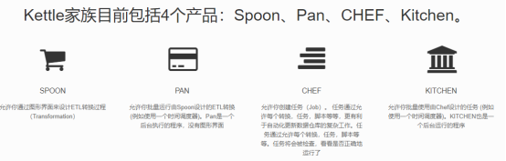
Kettle:概念模型
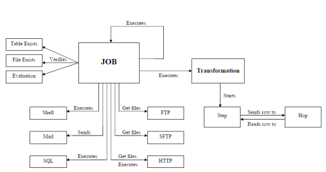
Kettle的执行分为两个层次：Job和Transformation。这两个层次的最主要的在于数据的传递和运行方式
1.Transformation：定义对数据操作的容器，数据操作就是数据从输入到输出的一个过程，可以理解为比Job粒度更小一级的容器，我们将任务分解成Job，然后需要将Job分解成一个或多个Transformation，每个Transformation只完成一部分工作。
（定义对数据操作的容器，数据操作就是数据从输入到输出的一个过程，可以理解为比作业粒度更小一级的容器，我们将任务分解成作业，然后需要将作业分解成一个或多个转换，每个转换只完成一部分工作。
）
2.Step：是Transformation内部的最小单元，每一个Step完成一个特定的功能。
3.Job：负责将Transformation组织在一起进而完成某一工作，通常我们需要把一个大的任务分解成几个逻辑上隔离的Job，当这几个Job都完成了，也就说明这项任务完成了。
（负责将[转换]组织在一起进而完成某一块工作，通常我们需要把一个大的任务分解成几个逻辑上隔离的作业，当这几个作业都完成了，也就说明这项任务完成了。
）
4.Job Entry：Job Entry是Job内部的执行单元，每一个Job Entry用于实现特定的功能，如：验证表是否存在，发送邮件等。可以通过Job来执行另一个Job或者Transformation，也就是说Transformation和Job都可以作为Job Entry。
5.Hop：用于在Transformation中连接Step，或者在Job中连接Job Entry，是一个数据流的图形化表示。
在Kettle中Job中的JobEntry是串行执行的，故Job中必须有一个Start的JobEntry；Transformation中的Step是并行执行的。
Kettle:目录文件
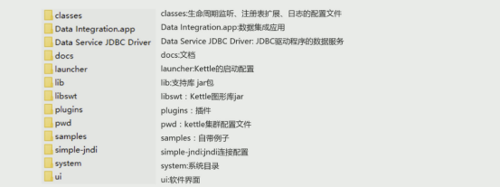 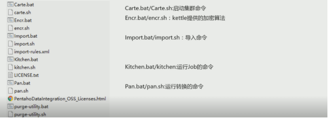
 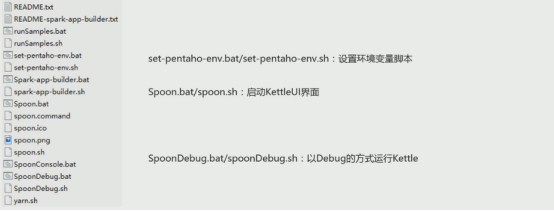
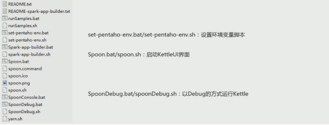
Kettle:部署
安装JDK：
由于Kettle是由java语言开发，该软件的允许需要java运行环境的依赖，需要先安装好JDK，准备好运行环境。
配置环境变量：
JAVA_HOME:JDK的安装目录
KETTLE_HOME:kettle的解压目录
 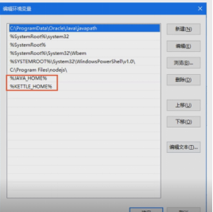
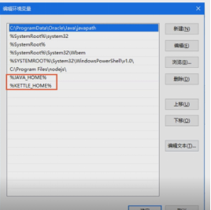
Kettle:图形界面

Kettle:核心概念
可视化编程：
Kettle可以被归类为可视化编程语言（Visula Programming Languages）,因为Kettle因为可以使用图形化的方式定义复杂的ETL程序和工作流。
Kettle 里的图就是转换和作业
可视化编程一直是Kettle的核心概念，它可以快速构建复杂的ETL作业和减低维护工作量。它是通过隐藏很多技术细节，使IT领域更贴近于商务领域。
转换：
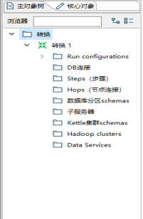
转换（Transformation）是ETL解决方案的中的最重要组成部分，它处理抽取，转换，加载各种对数据行的操作。
转换包含一个或者多个步骤（step），如读取文件，过滤数据行，数据清洗，或者是将数据加载到数据库。
转换里的步骤通过跳（hop）来连接，跳定义了一个单项通道允许数据从一个步骤到向另一个步骤流动。
在Kettle里，数据的单位是行，数据流就是数据行从一个步骤到另一个步骤的移动。
数据流有时候被称为记录流
Step步骤：
步骤（控件）是转换里的基本组成部分。
一个步骤有如下几个关键的步骤特性：
- 步骤需要有一个同一的名字，这个名字在转换范围内唯一
- 每个步骤都会读，写数据行（唯一的例外就是“生成记录”步骤，该步骤只写数据）
- 步骤将数据写到一个或者多个相关联的输出跳，再传送到跳的另一端的步骤
- 大多数的步骤都可以有多个输出跳。一个步骤数据发送可以被设置为分发和复制，分发是目标步骤轮流接收的记录，复制是所有记录被同时发送到所有的目标步骤。
Hop跳：
跳就是步骤之间带箭头的连线，跳定义了步骤之前的数据通路
跳实际上是两个步骤之间的被称为行集的数据行缓存（行集的大小可在转换的设置里定义）
{kind=link}
当行集满了，向行集写数据的步骤将停止写入，直到行集又有空间。
当数据行空了，从行集读取的步骤停止读取，直到行集里又有可读的数据行。
数据行-数据类型：
数据以数据行的形式沿着步骤移动，一个数据行时零到多个字段的集合，字段包含以下几种类型。
- String ：字符类型数据
- Number：双精度浮点数
- Integer：带符号的长整型（64位）
- BigNumber：任意精度数据
- Date：带毫秒精度的日期时间值
- Boolean：取值为true和false的布尔值
- Binary：二进制字段可以包含图片，声音，视频及其他类型的二进制数据
数据行-元数据：
每个步骤对在输出数据行时都有对字段的描述，这种描述就是数据行的元数据。
{kind=link}
包含以下一些信息。
- 名称：行里的字段名应该是唯一的
- 数据类型：字段的数据类型
- 格式：数据显示的方式，如Integer的#,0.00。
- 长度：字符串的长度或者是BigNumber的长度
- 精度：BigNumber类型的十进制精度
- 货币符号：¥
- 小数点符号：十进制数据的小数点格式。不同文化背景下小数点符号是不同的，一般是（.）或者是（，）。
- 分组符号：数值类型数据的分组符号，不同文化背景下分组符号是不同的，一般是点（.），逗号（，），单引号（‘）。
并行：
跳的这种基于行集缓存的规则允许每一个步骤都是有一个独立的线程运行，这样并发程度最高。这一规则也允许数据以最小的消耗内存的数据流的方式处理。在数据厂库中我们经常处理大量数据，所以这样并发低消耗内存的方式也是ETL工具的的核心需求。
对于Kettle的转换，不可能定义一个执行顺序，因为所有步骤都以并发方式执行：当转换启动后，所有步骤都同时启动。从它们的输入跳中读取数据，并发处理过的数据写到输入跳中，知道输入跳中不再有数据，就中止步骤的运行，当所有步骤都中止了，整个转换也就中止了（执行顺序要与数据流向分开，因为它们都是并行的操作）。
kettle输入控件
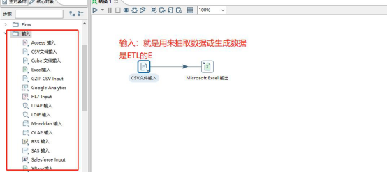
（一）XML输入：（控件-Get Date from Xml）
Xml: xml 是可扩展的标注语言，xml被设计用来传输和存储数据.(我们要解析xml的数据就使用Xpath
)
Xpath：Xpath是xml路径语言，它是一种用来确定xml文档中的某些部分位置语言。
XPath基于XML树状结构，提供在数据结构树中寻找节点的能力。
Xpath-语法：
选取节点Xpath使用路径表达式在Xml中选取节点。节点是通过沿着路径或者step
来选取的。
|
表达式 |
描述 |
|
nodename |
选取此节点的所有节点 |
|
/ |
从根节点开始选取 |
|
// |
从匹配选择的当前节点选择文档中的节点，而不开路他们的位置 |
|
. |
选取当前节点 |
|
.. |
选取当前节点的父节点 |
|
@ |
选取属性 |
示例：
|
路径表达式 |
结果 |
|
bookstore |
选取bookstore元素的所有子节点 |
|
/bookstore |
选取根元素bookstore 注释：加入路径起始于正斜杠(/)，则此路径始终代表到某元素的绝对路径 |
|
bookstore/book |
选取属于bookstore的子元素的所有book元素 |
|
//book |
选取所有的 book 子元素，不管他们在文档中的位置 |
|
Bookstore//book |
选择属于bookstore元素的后台的所有book元素，而不管他们位于bookstore下的任何位置 |
|
//@lang |
选取名为lang的所有属性 |
实例：
- 通过输入控件Get data from XML 获取xml文件
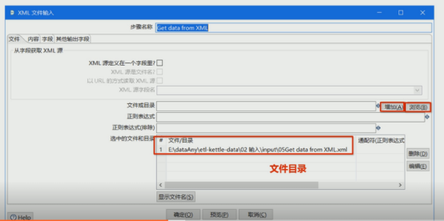
- 循环读取路径地址
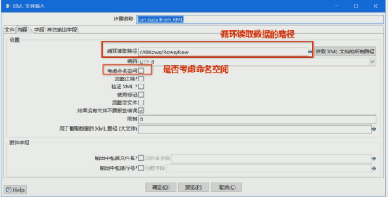
- 配置参数
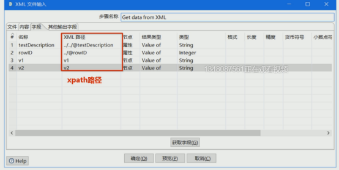
- 输出
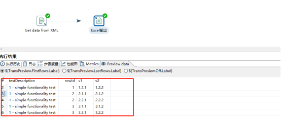
（二）JSON输入
JSON（JavaScript Object Notation ）是一种轻量级的数据交换格式
JSON的核心概念：数组 对象 属性
数组：[]
对象：{}
属性：key：value
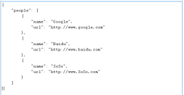
JSONPath:
JSONPath类似于XPath在xml文档中的定位，JsonPath表达式通常是用来路径检索或设置JSON的。
其表达是可以接受”data-notation”(点记发)和”bracket-notation” (括号记发)格式
点记发：$.store.book[0].title
括号记发：$[‘store’][‘book’][0][‘title’]
JSONPath操作符：
|
符号 |
描述 |
|
$ |
查询的根节点对象，用来表示一个JSON数据可以使数组或对象 |
|
@ |
过滤器断言（filter predicate）处理的当前节点对象，类似于java中this字段 |
|
* |
通配符，可以表示一个名字或数字 |
|
.. |
可以理解为递归搜索，Deep scan.Available anywhere a name is required |
|
.<name> |
表示一个子节点 |
|
[‘<name’>(,’<name’>’)] |
表示一个或者多个子节点 |
|
[<number>(,<number>)] |
表示一个或者多个数组下标 |
|
[start:end] |
数组片段，区间为[start,end],不包含end |
|
[?(<expression>)] |
过滤器表达式，表达式结果必须是boolean |
示例：
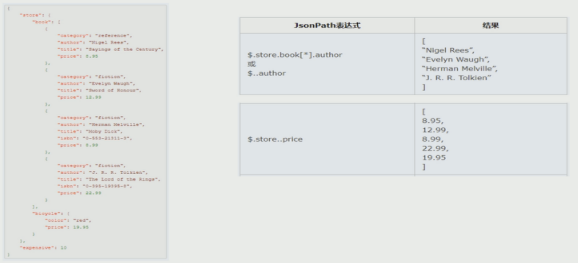
实例：
- 获取存储JSON的.js文件，并增加到《选中的文件》
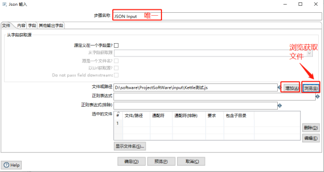
- 名称可随便定义，但路径要相对匹配
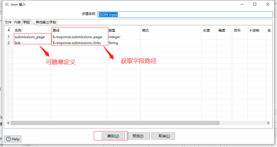
- 输出JSON数据
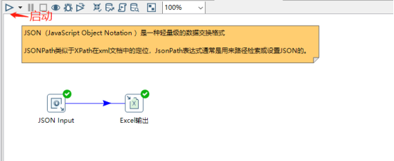
输出
输出是转化里面的第二个分类，属于ETL中得到L，L也就是加载（属于数据加载的分类）。
（一）表输出
-
首先添加Excel数据，并获取字段信息
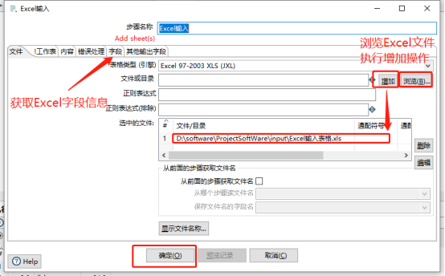
- 创建数据库连接，获取表信息。
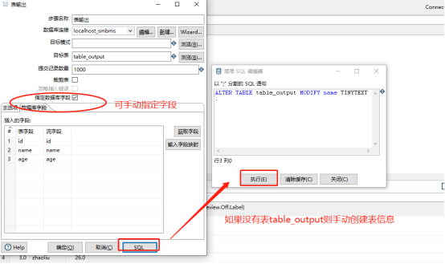
- 启动
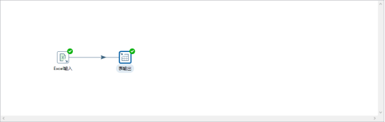
转换（重点）
Concat fields (控件)就是多个字段连接起来形成的新的字段。
值映射（控件）就是把字段的一个值映射成其他值。
增加常量（控件）就是在本身的数据流中添加一列数据，该列数据都是相同的值。
增加序列（控件）就是给数据流添加一个序列字段。
字段选择（控件）是从数据流中选择字段，改变名称，修改数据类型。
计算器（控件）是一个函数集合来创建的新的字段，还可以设置字段是否删除（临时字段）。
剪切字符串（控件）是指定输入吧v 流字段裁剪的位置剪切出新的字段。
字符串操作（控件）去除字符串两端的空格和大小写的切换并生成新的字段。
字符串替换（控件）是指定搜索内容和替换内容，如果输入流的字段匹配上搜索内容就进行替换生成新字段。
去除重复记录（控件）去除数据流里面相同的数据行（执行操作前，先进性排序）。
排序记录（控件）是按照指定的字段的升序和降序对数据流排序。
唯一行（哈希值）（控件）就是删除数据流重复的行（注意：唯一行（哈希值）和（排序记录+去除重复记录）效果是一样的，但实现原理是不一样的）。
拆分字段（控件）是把字段按照分隔符拆成两个或者多个字段。
列拆分为多行（控件）就是把指定的分隔符的字段进行拆分为多行。
列转行（控件）就是如果数据一列有相同的值，按照指定的字段，把多行数据转换为一行数据.去除一些原来的列名，把一列数据变成字段。（列转行之前对数据流进行排序）
行转列（控件）就是把数据字段额字段名转换为一列，把数据行变成数据列。
行扁平化（控件） 把同一组的多行数据合并为一行。 注意：只有数据流的同类数据数据行记录一致的情况下才可使用。数据流必须进行排序
Kettle流程控件（重点）
流程主要用来控制数据流程和数据流向
Switch/Case(控件)让数据流从一路到多路
过滤记录（控件）从数据流从一路到两路（很想编程的IF语句true，false）
空操作（控件）作为数据流的终点（不执行任何擦操作）
中止（控件）是数据流的终点，如果有数据到这里，将会报错（用来检验数据的时候时使用）
Kettle 查询控件（重点）
查询是用来查询数据源的数据并合并到主数据中。
Http client（控件）是使用Get的方式提交请求，获取返回的页面内容
数据库查询（控件）是数据库中的左连接。
数据库连接可以执行两个数据库的查询，和单参表的表输入
Kettle 脚本控件（重点）
脚本就是直接通过程序代码完成一些复杂的操作。
javascript脚本
javascript脚本就是使用javascript语言通过代码编程完成对数据流的操作。
JS中有很多内置函数，可以在编写JS代码时查看
存在两种不同的模式：不兼容模式和兼容模式
不兼容模式：是默认的也是推荐的
兼容模式：兼容老版本的Ketle
获取字段：
不兼容模式：
MyVar=filedName;(直接一个变量名)
兼容模式：根据字段类型不同使用不同方法
MyVar=filedName.getString();（字符串）
MyVar=filedName.getValue();（数字）
给字段赋值：
不兼容模式：直接使用字段名
filedName=MyVar;
兼容模式：使用
filedName.setValue(MyVar);
Java脚本
Java脚本就是使用java语言通过代码编程来完成对数据流的操作。
内置很多函数可以使用。
Main:
main函数对应一个ProcessRow()函数，ProcessRow()函数是用来处理数据流的场所。
SQL脚本（控件）可以执行一个update语句用来更新某个表的信息
作业
简介：大多数ETL项目都需要完成各种各样的维护工作。
例如，如何传送文件；验证数据库表的存在，等等。而这些操作都是按照一定顺序完成的。因为转换以并行方式执行，就需要一个可以串行执行的作业来处理这些操作。
一个作业包含一个或者多个作业项，这些作业项以某种顺序来执行。作业执行顺序由作业项之间的跳（JOB HOP）和每个作业执行结果来决定。
作业项
作业项是作业的基本构成部分，如同转换的步骤，作业项也可以通过图标的方式图形化展示。
但是，如果你仔细观察，还是会发现作业项有一些地方不同于步骤；
在作业项之间可以传递一个结果对象。这个结果对象里面包含了数据行，他们不是以数据流的方式来传递到，二十等待一个作业执行完毕后再传递给下一个作业。
作业跳
作业的跳是作业项之间的连接线。他定义了作业的执行路径。作业里每个作业项的不同运行结果决定了作业的不同执行路径。
① 无条件执行：不论上个作业项执行成功或者失败，下一个作业项都会执行。这是一种蓝色的连接线，上面有一个锁的标。
② 当运行结果为真时执行：当上一个作业项执行结果为真时，执行下一个作业项。通常在需要无错误执行的情况下使用。这是一条绿色的连接线，上面有对勾号的图标。
③ 当运行结果为假时执行：当上一个作业项执行结果为假或者没有执行成功，执行一按一个作业项，这是一条红色的连接线，上面有红色停止的图标。
参数：
对于ETL参数传递是一个非常重要的环节，因为参出的传递会涉及到业务参数是如何抽取的。
参数分为两种：全局参数和局部参数
全局参数：定义在当前用户下.kettle文件夹下的kettle.properties文件来定义。
定义方式是采用键=值的方式来定义 如：start_date=120;
注意：配置前变量后需要重启Kettle
局部参数：是通过”Set Variables” 于”Get Variables” 方式来设置
注意：在”Set Variables”时在当前转换不能马上使用，需要在作业的下一个步骤执行。
参数的使用：Kettle参数的使用：（1）%%变量名%%（2）${变量名}
注意：在SQL中使用变量时需要吧“是否替换参数”勾选上，否则变量无法生效。
常量传递：
常量传递就是先自定义常量数据，在表输入的SQl语句里面使用？来代替。
？替换的顺序就是常量调用的顺序。
转换命名参数：
转换命名参数就是在转换内部定义的变量，作用范围是转换内部。
在转换的空白处右键，选择转换设置就可以看见。
设置变量，获取变量：
在转换里面有一个作业分类，里面是转换变量和设置变量的分类。
注意：“获取变量”时在当前转换当时是不能马上使用的，需要在作业的下一个步骤使用
---------变量也可以作业里面设置（作业下有一个通用的模块下的《设置变量》）
结束。。。。谢谢